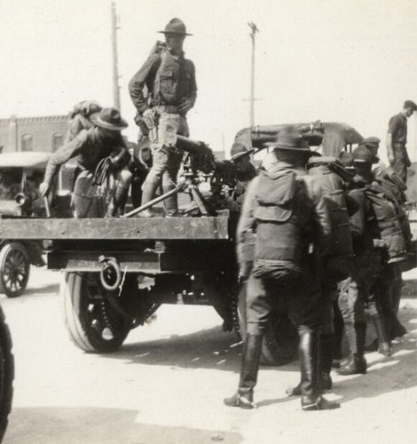
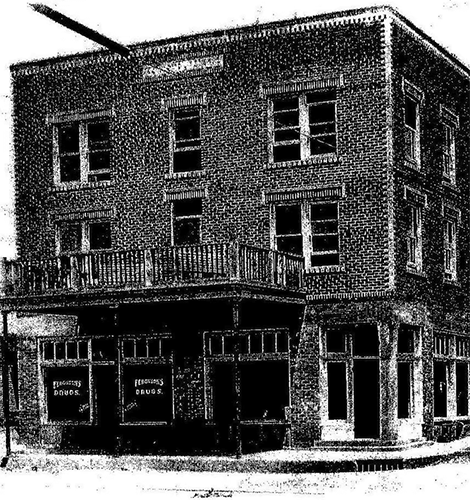

NATIONAL GEOGRAPHIC
Thousands lost everything in the Tulsa Race Massacre including my family
HISTORY & CULTURE
- 
- 
When I was in elementary school, my grandfather, Theron C. Toole, pulled me aside at his house. He said he needed to talk to me about something important: our family history. He told me about my great-great-great grandfather, J.B. Stradford, and how he owned property, including a hotel, on Black Wall Street in Tulsa. I didn’t understand the significance of what he was saying then, but the words “Black Wall Street” stuck with me.
Now I know more. May 31 marks the 100th anniversary of the 1921 Tulsa Race Massacre, when a white mob destroyed the thriving Black community of Greenwood, killing as many as 300 people. The attackers burned more than one thousand homes and numerous businesses—my ancestor J.B.’s properties among them and left nearly 10,000 people homeless, almost the entire Black population
In addition to lives, Greenwood residents and their descendants, like me lost what would today total an estimated $610 million in accumulated wealth. We also lost a vibrant neighborhood created by successful Black business owners and entrepreneurs not even 50 years after the end of slavery. And at the heart of it was J.B, who did everything in his power to support and enhance the thriving community of Greenwood.
Before the massacre, Greenwood, later remembered as Black Wall Street, bustled with 41 grocery stores, 30 restaurants, 11 boarding houses, nine billiard parlors, five hotels, and many other businesses, including laundry services, movie theatres, and a dance club. One of the most prominent was my great-great-great grandfather’s Stradford Hotel.
“The most beautiful crystal chandeliers were hung in every banquet hall and lobby,” wrote J.B. in his unpublished memoir, which my cousin Nate Calloway shared with me recently. “The bright lights were flashing all over the place and the guest from afar and near were tripping the fantastic toe, enjoying the opening of the largest and finest hotel in the United States owned and operated and built by an African American.”
J.B.’s memoir, which he wrote later in his life, recounts how he went from an impoverished childhood to a life of entrepreneurship and civic activism. His story starts in Versailles, Kentucky, where he was born on September 10, 1861. His father, Caesar, had been enslaved but worked hard to gain his freedom and to educate himself, even though it was at risk to his life.
Caesar was taught to read by the abolitionist daughter of the family that enslaved him. “After each lesson,” wrote J.B. of his father, “he would put the book in the top of his hat," only taking it out when he could study unseen. “Early morning and evening were spent studying. This procedure continued long enough to enable him to read and write.”
His father’s enslavement and educational process led J.B. to hold high educational standards for himself. He earned his undergraduate degree at Oberlin College in Ohio during a time when most universities did not admit Black students and then received his law degree from the Indianapolis College of Law, which was later absorbed by Indiana University.
COURTESY NATE CALLOWAY
He began his entrepreneurial journey at Oberlin, working at a barbershop 10 miles from the campus. “After the first month in Oberlin and liquidating my money, I rented two rooms, one for sleeping and the other for a barbershop,” he wrote. “Many of my classmates and citizens patronized me which enabled me to make my current expenses.”
In Ohio he met Bertie Wiley, the woman he would marry. After graduation, the two returned to Kentucky, where J.B. worked as a school principal and owned a barbershop.
In Kentucky, J.B. had an experience that shaped him for the rest of his life: He saw a man being lynched. A white woman had accused a Black man of rape but J.B. reported in his memoir that she was having an affair with the man and her husband caught them.
When the man was taken out of the jail to be lynched, the rest of the Black community ran and hid but J.B. decided to stay and watch. He vividly describes the man’s death: His neck didn’t snap, and his tongue hung from his mouth “as large as a beeff [sic] tongue.” From that moment, J.B. determined to do all he could to stop lynchings.
But he no longer felt safe in his home state. He and Bertie headed for Indiana with $15,000 in savings. He opened a bicycle store and another barbershop and earned his law degree in 1899. The couple then moved to Coffeyville, Kansas, where Bertie passed away.
Comments :
- john Very good
- john Very good
Leave a Reply
Your email address will not be published. Required fields are marked*
Related posts:
-
 COVID-19 can ruin your sleep in many different ways—here's why
COVID-19 can ruin your sleep in many different ways—here's whySix weeks after a mild case of COVID-19 early in the pandemic, Erika Thornes started waking up every night between 2 and 3 a.m. Unable to fall back asleep, she would listen to podcasts, read, and scroll through Twitter
View article -
Now we know how COVID attacks your heart
Scientists have noticed that COVID-19 can trigger serious cardiovascular problems, especially among older people who have a buildup of fatty material in their blood vessels. But now a new study has revealed
View article -
What causes long COVID The answer might be in your gut
Nearly one in five people who have had COVID-19 in the United States continue to suffer from symptoms of long COVID. But why some people recover completely while others remain sick has been a mystery.
View article